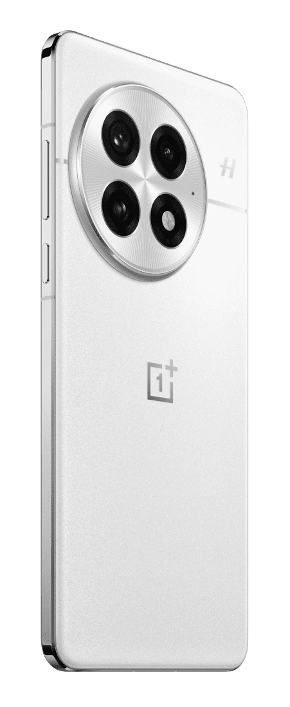
-
Камера
Три глаза Hasselblad
Три камеры по 50 Мп под одним кольцом: главная, сверхширокая и телеобъектив с приближением 3×.
-
Корпус
8,5 мм металла и стекла
Плоская алюминиевая рамка, на боку — фирменный слайдер: одним движением переключает звук, вибрацию и тишину.
-
Экран
4500 нит
6,82 дюйма, разрешение 2K, 120 Гц. Первый экран, получивший высшую оценку A++ от лаборатории DisplayMate.
Зум
От 0,6× до 30×
Один и тот же берег, снятый с одного места на OnePlus 13. До 3× приближает оптика, дальше помогает сенсор на 50 Мп. Листай — кадр приблизится.
0,6×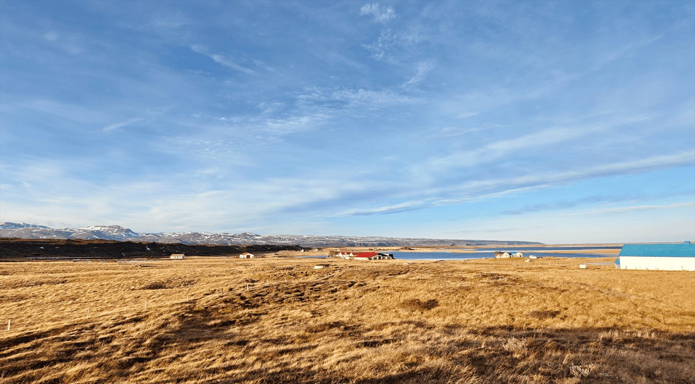
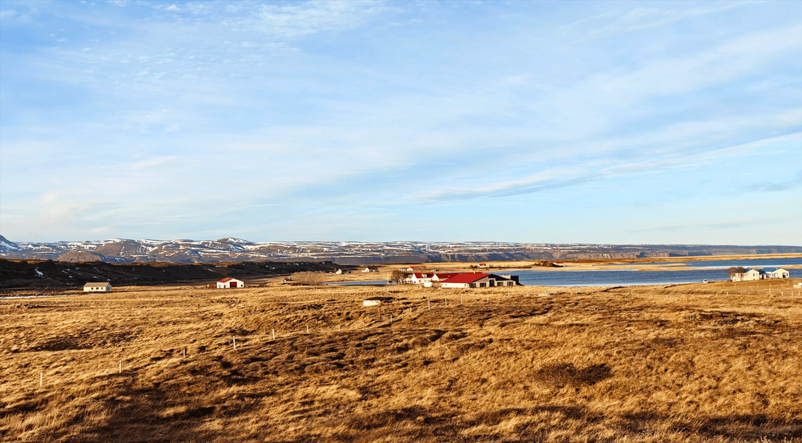
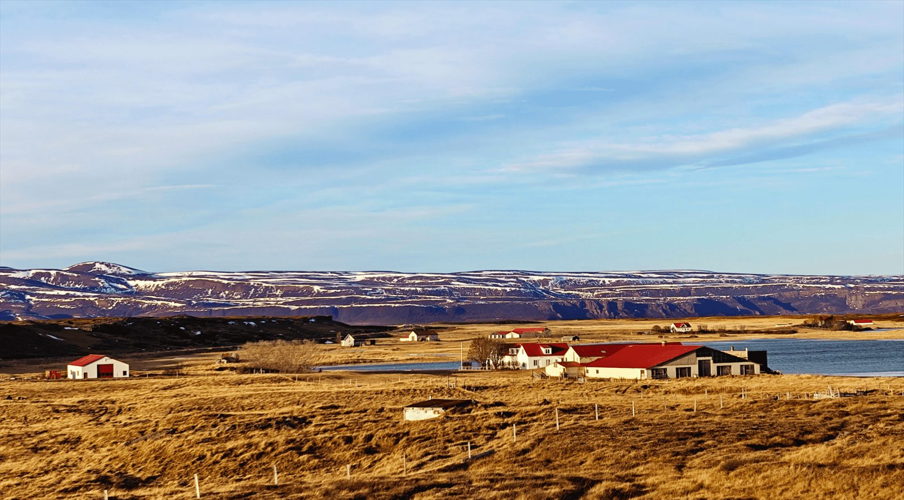
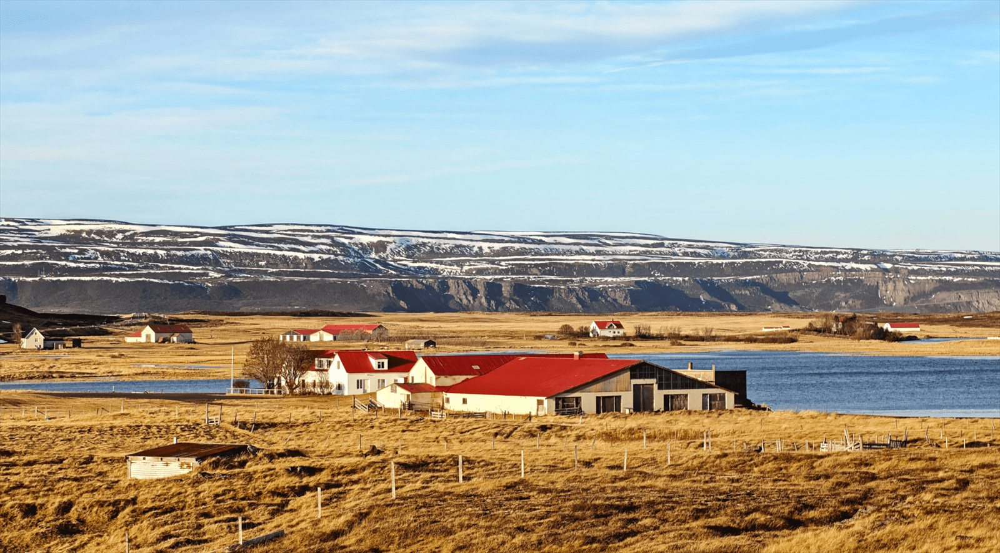
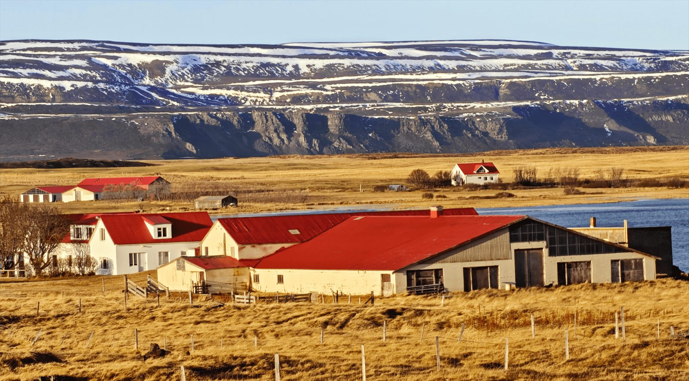
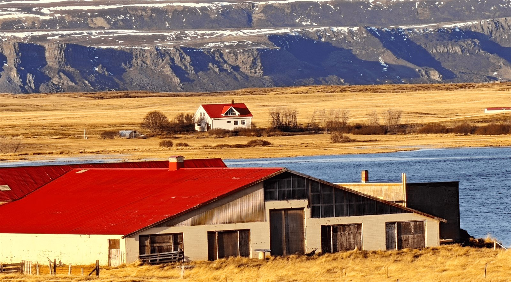
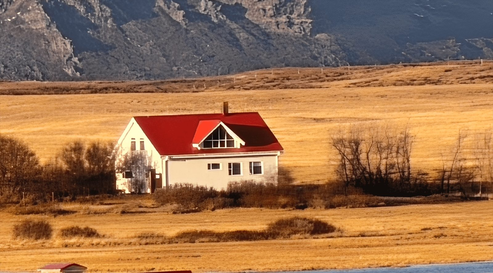
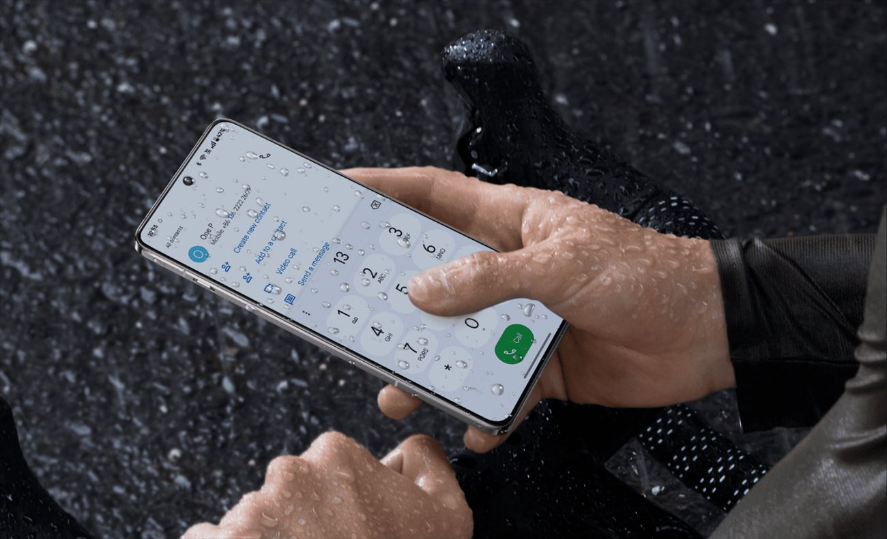
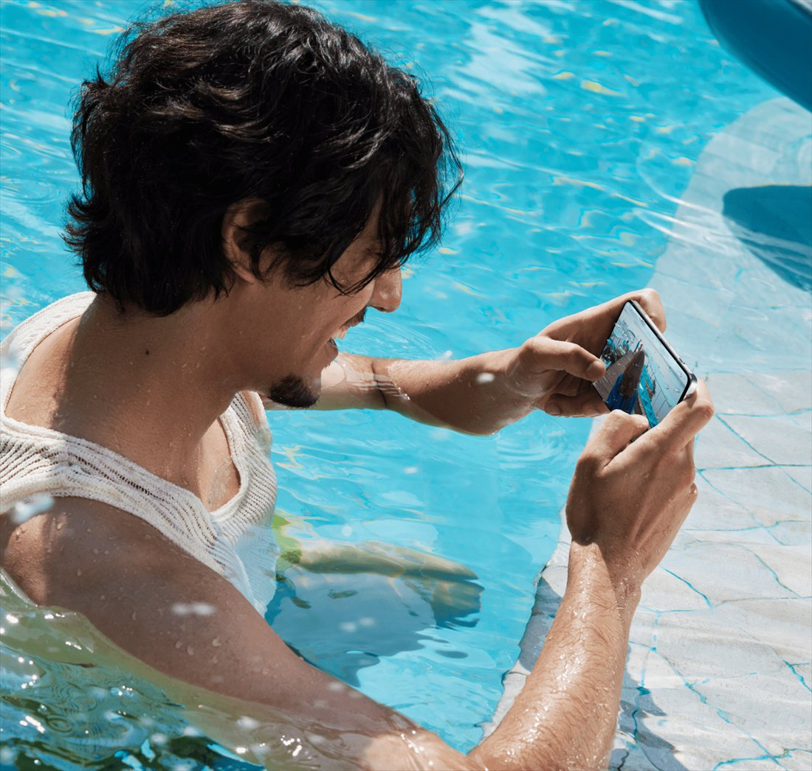
Защита
Ему всё равно
- ЛивеньЭкран слушается мокрых пальцев: технология Aqua Touch 2.0 отличает касание от капель.
- МорозРежим перчаток: экран работает через шерсть и кожу, руки можно не морозить.
- IP68 и IP69Выдерживает погружение на полтора метра и струи воды температурой 80 °C под давлением.
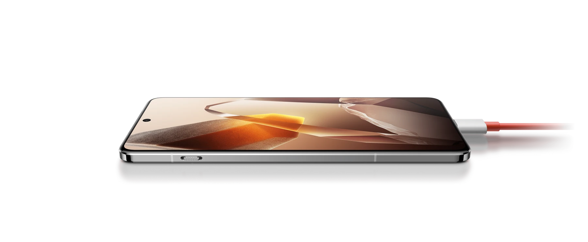
Батарея
6000 мА·ч
Кремний-углеродная батарея: больше заряда в том же объёме. От 1 до 100% по проводу — за 36 минут. Листай и смотри, как он заряжается.
- 100Вт по проводу
- 50Вт без провода
- 36минут до 100%
Снято на OnePlus 13
Портреты и движение
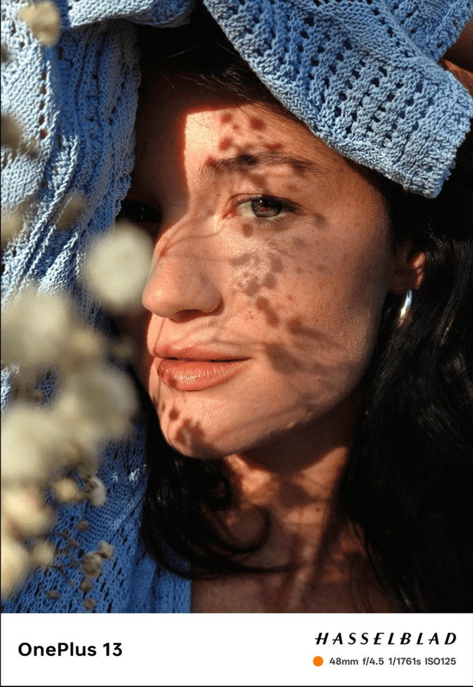
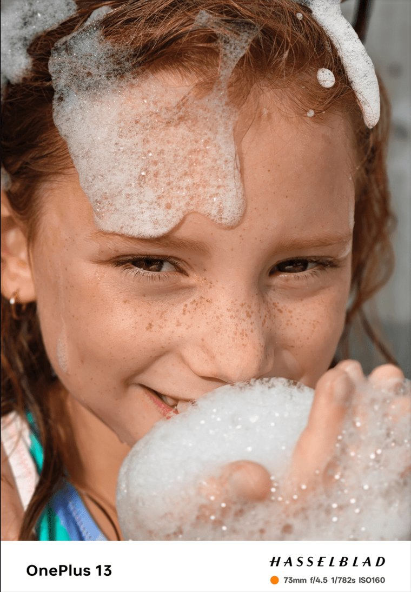
В цифрах